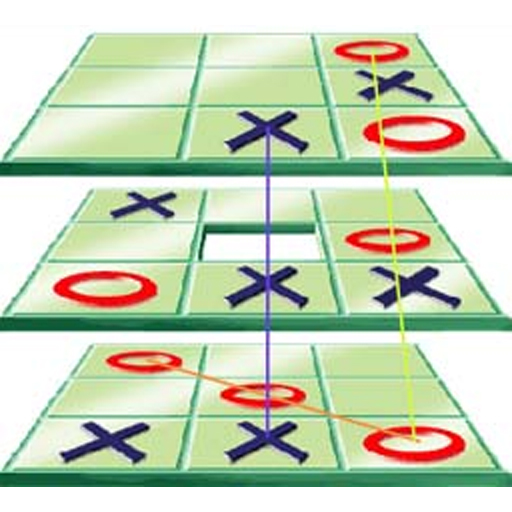

Jeu de morpion 3D
Règles du jeu
Le principe du jeu Morpion 3D est simple. Pour gagner, il suffit d'aligner 3 pions de façon horizontale, verticale ou même en diagonale. Une régle simple mais d'une redoutable efficacitée! De nombreuses parties en perspective!

Haut
Centre
Bas